| ・ 日本機械学会 関西学生会2018年度学生員卒業研究発表講演会＠立命館大学 びわこ・くさつキャンパス (H31.03.10) | |||
去年は2人でしたが、今年は5人発表です。I田さんが流体計測の研究で「周期流における振動翼の渦放出と推力の関係に関する実験的研究」、 Y山さんが流体計測の研究で「PIV に基づく圧力推定手法の精度向上に関する研究」、M四さんが光計測の研究で「2 台のカメラを用いた位相回復ホログラフィにおける空間解像度の向上」、M山さんが光計測の研究で「多波長位相回復ホログラフィによる粒子計測 」 、S山さんが音響計測の研究で「二段階直管モデルを用いたタイヤ空洞共鳴周波数の推定 」という題目で発表しました。来年の下見にB3も参加しました。発表練習の時にも鋭い質問で大いに貢献しました。 |
|||
|
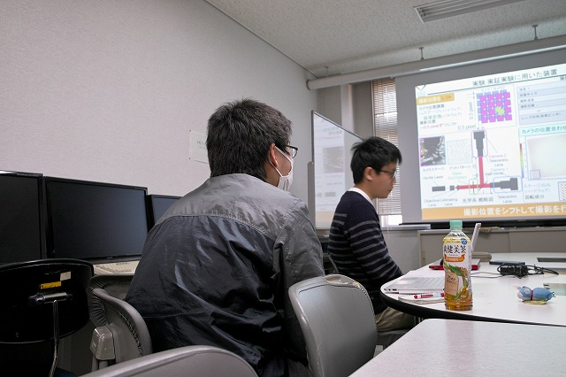
自主練習 |
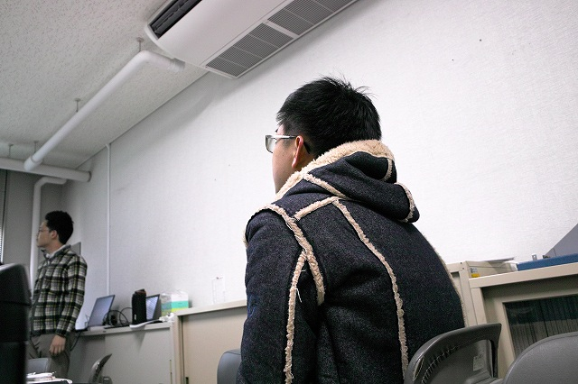
切磋琢磨中 | ||
|
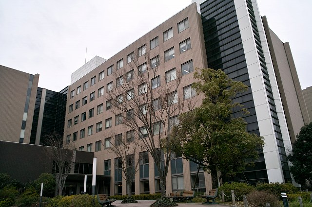
ここと思ったら違うかった |
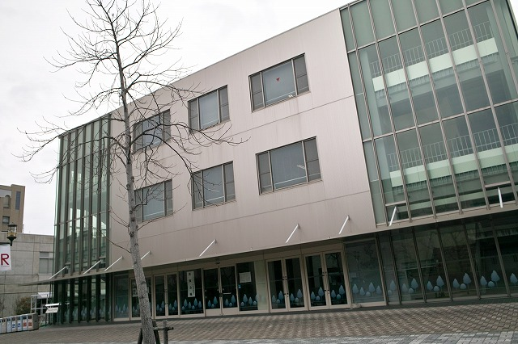
どうやらここ | ||
|
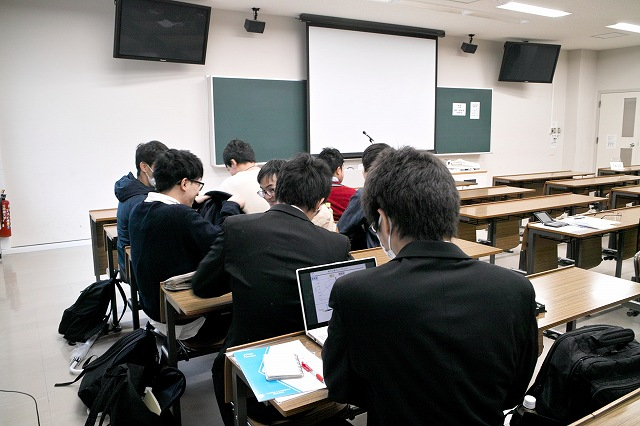
来年発表予定のB3も来てます |
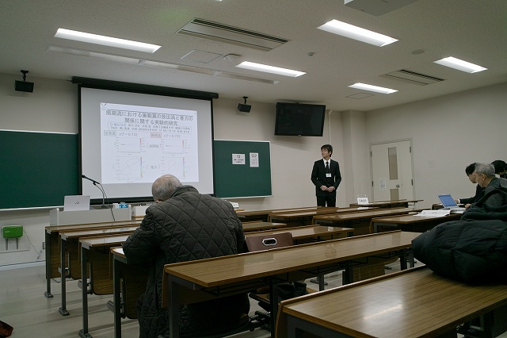
まずはI田さん | ||
|
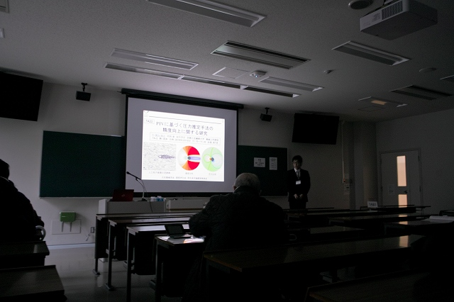
同室のY山さん |
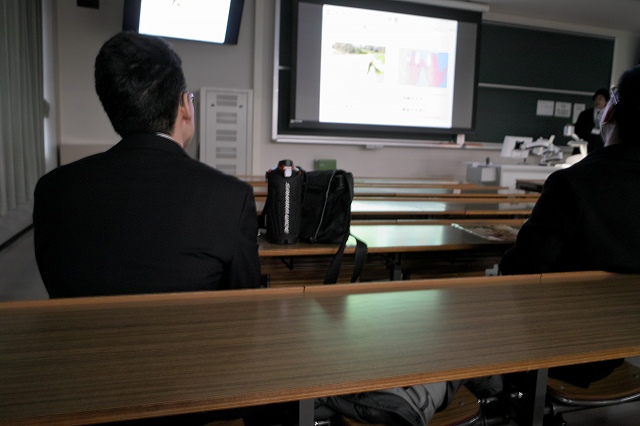
別室へ移動 | ||
|
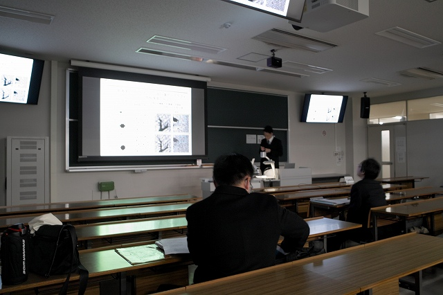
質疑も順調 |
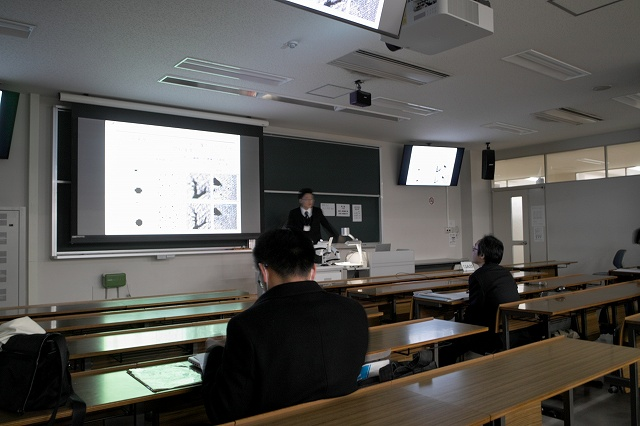
M四さんは単独 | ||
|
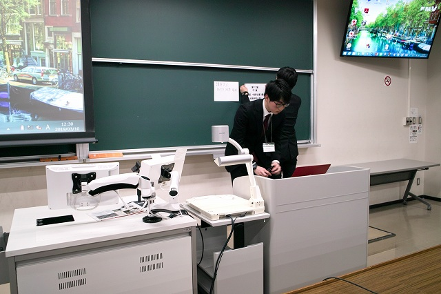
機材チェック |
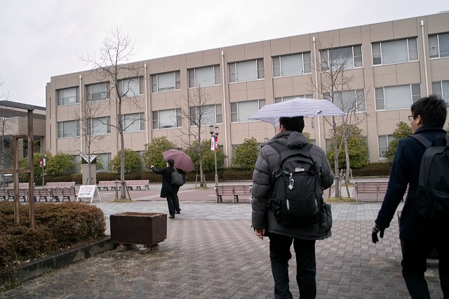
雨がきつい | ||
|
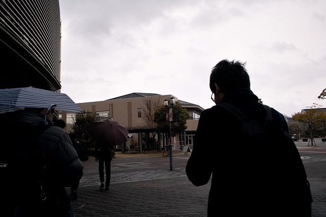
遺跡が見たいという要望 |
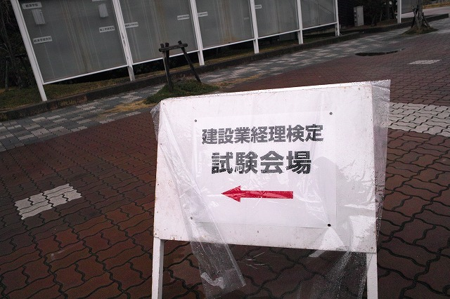
これに何度もつられた | ||
|
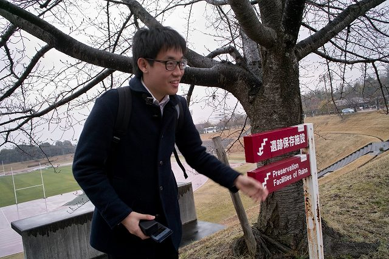
この下にある！ |
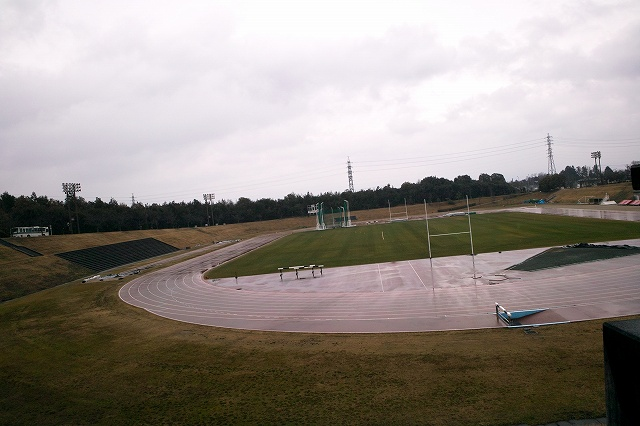
グランドではなく | ||
|
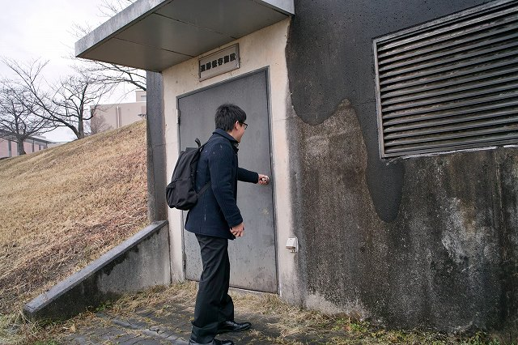
閉まってる |
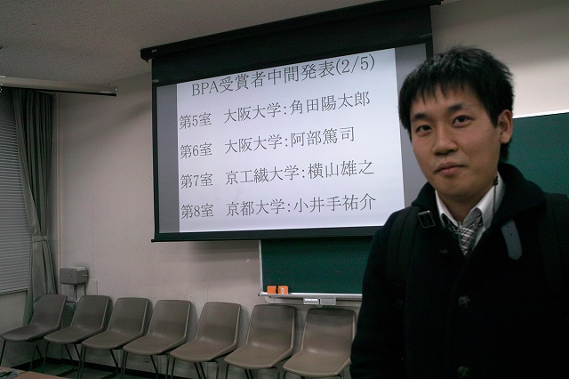
午前でY山さん受賞 | ||
|
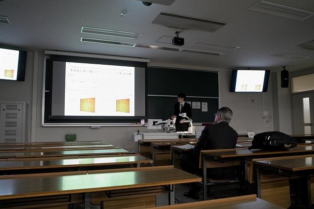
M山さん |
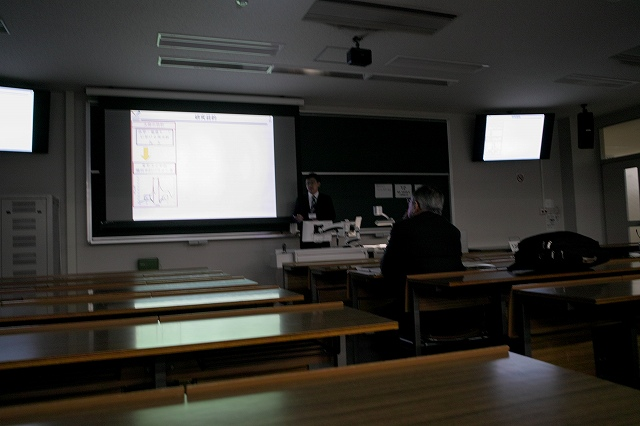
同室でS山さん | ||
|
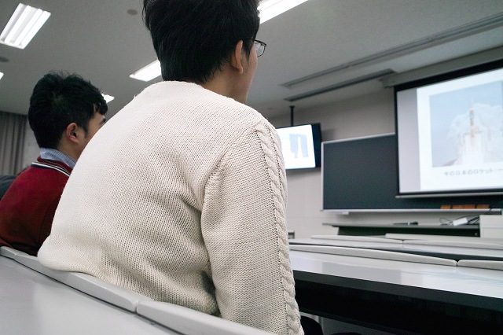
特別公演も参加のB3の2人 |
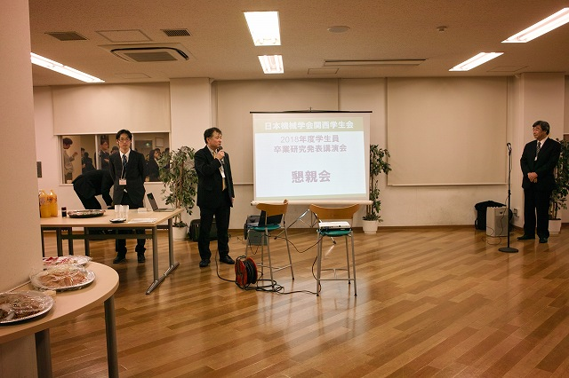
午後の部はどうだったのか？ | ||
|
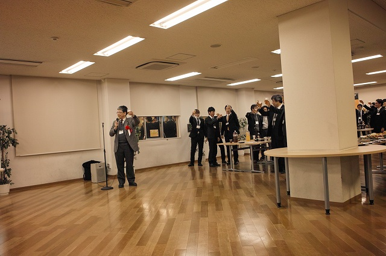
まず乾杯 |
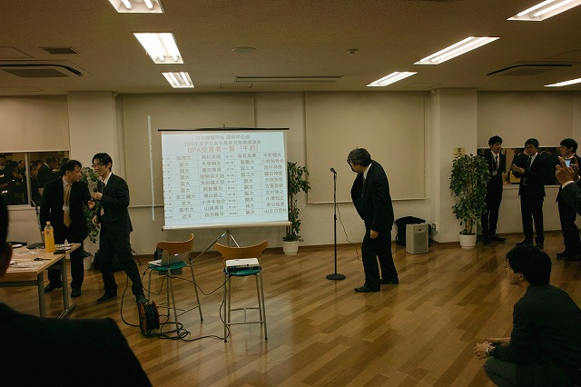
お！ | ||
|
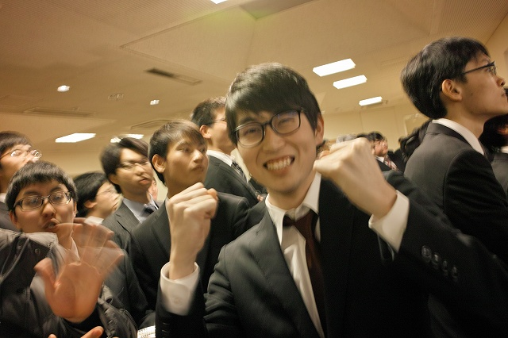
M山さんが午後で受賞 |
午前のY山さん（やらされ感が） | ||
|
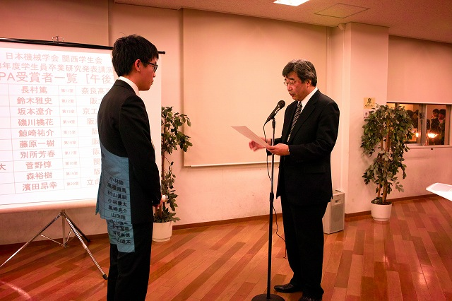
代表して受け取りにY山さんが！ |
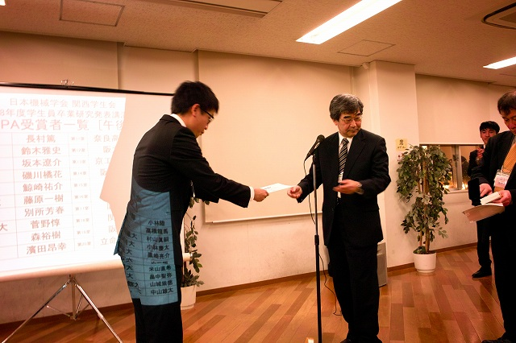
メダルもあります | ||
|
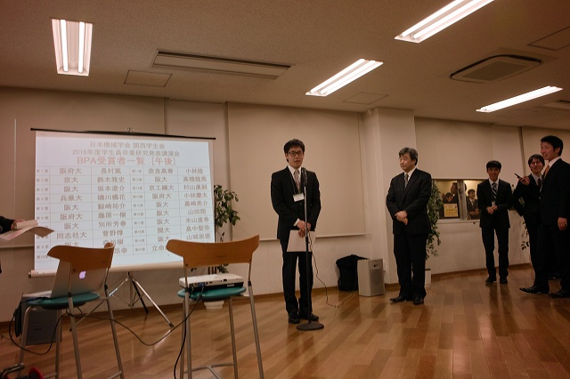
挨拶も（スタッフに感謝、みんなに感謝、親に感謝） |
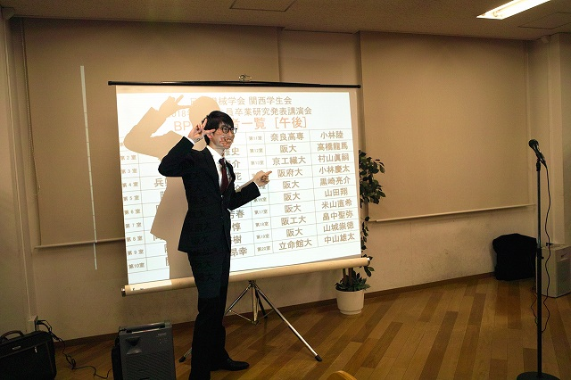
インスタとlineに載せる予定 | ||